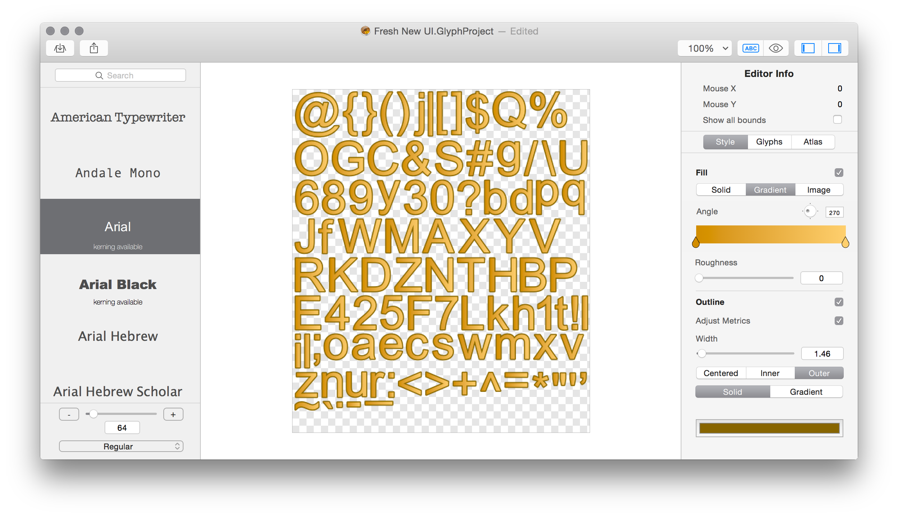

Para crear texto simplemente podemos usar la clase
Phaser.GameObjects.Text
con la factoría de Phaser add.text de Scene
Pero podemos modificar los atributos de text para cambiar su aspecto
como:
setAlign: alineación del textosetFont: tipo de letrasetFontSize: tamañosetStroke: color del borde y grosorsetFill: color de relleno// this es una Scene
let text = this.add.text(this.cameras.main.centerX, this.cameras.main.centerY, '- phaser text stroke -');
text.setOrigin(0.5,0.5);
// alineación del texto
text.setAlign('center');
// Font style
text.setFont('Arial Black');
text.setFontSize(50);
//Color del reborde de la letra y grosor.
text.setStroke('#000000', 6)
text.setFill('#43d637');
text.setShadow(5, 5, 'rgba(0,0,0,0.5)', 5);
Muchas veces, el texto se utiliza como parte de la UI del juego (puntuación, vidas…)
Pero el texto creado tal cual lo hemos hecho tiene una posición en la escena y, por tanto, se queda fijo al mover la cámara y puede desaparecer de la escena.
Solución: Recordad que algunos GameObject tienen un método
SetScrollFactor
que controla el movimiento de un objeto con respecto al de la cámara
Se puede crear un botón fácilmente usando un texto interactivo y
añadiendo un evento de onpointerdown:
let button = this.add.text(...).setInteractive();
button.on('pointerdown', pointer => {
// hacer algo
});
Una fuente de nuestra máquina puede no estar disponible en la máquina del usuario.
¿Solución? Usar fuentes estándar, crear nuestras propias fuentes de mapa de bits (bitmap fonts) o usar fuentes Web (webfonts) como Google Fonts

Figura 1: Bitmap Fonts
Para cargar una fuente de mapa de bits hay que usar
scene.load.bitmapFont()
en el preload
Hay que pasarle el bitmap (en PNG, por ejemplo) con las fuentes y el XML que las describe
// this es scene
preload(){
this.load.bitmapFont(
'bitmapFont', 'assets/fonts/bitmapFonts/bitmapFont.png',
'assets/fonts/bitmapFonts/bitmapFont.xml');
}
create(){
this.greeting = this.add.bitmapText(200, 100, 'bitmapFont','Bitmap Fonts!', 64);
}
Para generar el XML y el mapa de bits podemos usar:
Podemos cargar fuentes desde la web, por ejemplo desde Google Fonts
Hay que cargar la fuente previamente antes de usarla
Cargamos el código para usar webfonts:
preload() {
this.load.script('webfont', 'https://ajax.googleapis.com/ajax/libs/webfont/1.6.26/webfont.js');
}
Después, llamamos a WebFont.load():
// this es Scene
create(){
let self = this; // Para usarlo en active
WebFont.load({
google: {
families: [ 'Freckle Face', 'Finger Paint', 'Nosifer' ]
},
active: function () // se llama a esta función cuando está cargada
{
let nuevoTexto =
self.add.text(16, 0,
'The face of the\nmoon was in\nshadow.',
{ fontFamily: 'Freckle Face', fontSize: 80, color: '#ffffff' })
nuevoTexto.setShadow(2, 2, "#333333", 2, false, true);
}
});
}
Que dependemos de ellas para que el juego funcione y no tenemos control sobre ellas
Almacenar las fuentes de nuestro juego en el servidor y cargarlas.
Las podemos guardar en /assets/fonts
Creamos una función auxiliar y cargamos la fuente:
loadFont(name, url) {
let newFont = new FontFace(name, `url(${url})`);
newFont.load().then(function (loaded) {
document.fonts.add(loaded);
}).catch(function (error) {
return error;
});
}
preload() {
// Archivo .ttf descargable desde
// https://www.dafont.com/es/happy-donuts.font
this.loadFont("Donuts", "/assets/fonts/HAPPY_DONUTS.ttf");
}
// this es Scene
create() {
let nuevoTexto =
this.add.text(16, 0,
'The face of the\nmoon was in\nshadow.',
{ fontFamily: 'Donuts', fontSize: 80, color: '#ffffff' })
}